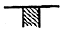
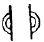

패션머천다이징산업기사 (2010-07-25 기출문제)
1과목: 패션마케팅
1. 리테일 머천다이저와 유사 개념으로 상품의 구매계획만을 담당하는 스페셜리스트는?
- 바이어
- 코디네이터
- 디자이너
- 어패럴 머천다이저
(정답률: 알수없음)

2. 기업의 경쟁형태에 관한 예로서 경쟁형태의 설명으로 옳은 것은?
- 독점-스판덱스 시장은 A사, B사, C사 등이 시장내에서 유일한 기업들로 시장을 독식하고 있다.
- 과점-국내 이웃도어 스포츠웨어 업계는 A, B, C, D사에 의해 지배당하고 있으며 사실상 후발업체의 진입이 힘든 상황이다.
- 독점적 경쟁-A사와 B사와 기능성 스포츠 내의 시장을 독점하고 경쟁을 벌이는 업체들이다.
- 순수경쟁-비교적 많은 수의 기업이 청바지 시장에 뛰어들어 차별화된 상품으로 치열한 경쟁을 벌이고 있다.
(정답률: 알수없음)
3. 다음 중 패션산업에 필요한 소비자정보에 해당되는 것은?
- 정기적인 시장조사
- 경쟁브랜드의 상품조사
- 정기적인 패션스트리트조사
- 소매점 정보조사
(정답률: 알수없음)
4. 패션유통의 유형에 대한 설명으로 틀린 것은?
- 위탁판매제도는 의류제조업체가 기획, 생산, 판매에 책임을 지는 것으로 재고분은 제조업체에서 책임진다.
- 완사입제도는 대리점주의 상품선별 능력이나 소비자 욕구 파악이 우선시 되어야 한다.
- 완사입제도의 경우 삼품수주시 트렌드 상품에 대한 소매점주들의 수용도가 높다.
- 위탁판매제도의 경우 패션소매상의 상품구매에 따른 위험부담이 적다.
(정답률: 알수없음)
5. 다음 중 시장 세분화의 기준에 해당되지 않는 것은?
- 인구통계적 기준
- 심리분석점 기준
- 사회적 기준
- 지리적 기준
(정답률: 알수없음)
6. 적절한 패션상품과 서비스를 소비자가 원하는 시간과 장소에 적정한 가격으로 공급하기 위해 의류제조업체와 패션 소매상들이 공동으로 실시하는 물류정보시스템은?
- CAM
- POP
- QRS
- EDI
(정답률: 알수없음)
7. 마케팅 관리의 발전단계 4단계 중 기업에서 표적시장의 욕구, 필요, 가치 등을 확인하고 경쟝기업보다 효율적이고 능률적으로 소비자의 욕구를 충족시키기 위한 단계는?
- 생산지향단계
- 판매지향단계
- 마케팅지향단계
- 사회적 책임과 인간지향 단계
(정답률: 알수없음)
8. 다음 중 시장포지셔닝 분석의 장점이 아닌 것은?
- 시장의 어떤 영역이 유망한지를 알 수 있다.
- 자사브랜드가 속하는 시장세분화 영역을 명확하게 할 수 있다.
- 자사브랜드를 선호하는 소비자의 라이프스타일의 분석이 용이하다.
- 경쟁브랜드와의 차별화 방향을 알 수 있다.
(정답률: 알수없음)
9. 우리나라 기업들의 마케팅활동에 영향을 주는 요인들 중 사회문화적 환경요인이 아닌 것은?
- 신세대는 기성세대와 뚜렷이 구분되는 그들만의 문화를 형성함으로써 패션의 변화를 주도하고 있다.
- 가족형태가 대가족에서 핵가족, 독신가족 등으로 다양해짐에 따라 패션제품의 질적, 양적 변화를 가져오고 있다.
- 여성의 교육수준 등가는 여성의 취업률을 증가시키고, 기계의 소득 수준 향상, 외모에 대한 여성의 자기 관리능력을 높이고 있다.
- 새로운 원사나 가공법에 따른 신소재는 새로운 유행을 창조하기도 한다.
(정답률: 알수없음)
10. 패션 바이어의 상품 구성으로 옳은 것은?
- 경쟁점포가 밀집된 지역에서는 폭보다 깊이가 우선시 되어야 한다.
- 경쟁점포가 적고 독점성이 큰 지역에서는 폭보다 깊이가 우선이어야 한다.
- 독점성이 큰 지역에서는 폭보다는 깊이가 우선되어야 한다.
- 제품을 중심으로 전문화된 전문점의 경우 폭이 넓은 구성이 필요하다.
(정답률: 알수없음)
11. 다음 중 패션정보의 흐름상 가장 먼저 제시되는 패션 정보원은?
- Premiere Vision
- Expofil
- Promostyl
- IGEDO
(정답률: 알수없음)
12. 리테일 머천다이저의 역할로서 옳은 것은?
- 어패럴 메이커에서 기성복의 상품기획 담당자
- 상품의 생산을 촉진하기 위한 광고제작자
- 생산 공정에서의 기술지도자와 생산관리자
- 유통업 분야에서 머천다이징 업무를 담당하는 전문가
(정답률: 알수없음)
13. 시장세분화의 변수 중 인구통계적 변수가 아닌 것은?
- 성격
- 연령
- 성별
- 소득
(정답률: 알수없음)
14. 고객층과 상품구성의 폭과 깊이에 대한 설명이 틀린 것은?
- Prestige-상품의 퀼리티와 희소가지가 중요시되며, 폭은 넓고 깊이는 얕게 구성한다.
- Better-상품의 퀼리티가 중요시되며 폭은 넓고 깊이는 얕게 구성 한다.
- Volume better-상품의 양이 중요시되며, 폭도 깊이도 깊게 구성 한다.
- Budget-상품의 가격이 중요시되며, 폭은 좁고 깊이가 깊게 구성 한다.
(정답률: 알수없음)
15. 시장 세분화의 개념과 필요성에 대한 설명으로 틀린 것은?
- 시장 세분화 전략은 전체시장을 세분화한 개개의 시장에서 소비자의 수요에 적응시키는 전략이다.
- 어느 한 상품이나 상표가 전체시장에 효과적으로 판매되기란 불가능하기 때문에 특정의 부분시장만을 목표로 해야 한다,
- 시장 세분화는 서로 다른 구매의욕과 필요조건을 가진 구매자군을 식별하는 과정을 의미한다.
- 시장 세분화는 시장의 이질성에 따라 몇 개의 특정한 집단으로 분류하는 것이 아니라 소비자를 포괄적인 개념으로 파악하는 것이다.
(정답률: 알수없음)
16. 다음 중 패션머천다이징의 개념을 설명하는 5R에 해당되지 않는 것은?
- 적절한 상품(right product)
- 적절한 가격(right price)
- 적절한 장소(right place)
- 적절한 판매촉진(right promotion)
(정답률: 알수없음)
17. 자사 브랜드를 소비자 편익과 관련시키는 방법으로, 품질, 가격에 의한 포지셔닝이 대표적인 전략의 유형은?
- 제품속성에 의한 포지셔닝
- 사용상황에 의한 포지셔닝
- 제품사용자에 의한 포지셔닝
- 이미지에 의한 포지셔닝
(정답률: 알수없음)
18. 리테일 머천다이저의 주요업무에 해당되지 않는 것은?
- 정보전략
- 가격정책
- 상품관리
- 디자인개발
(정답률: 알수없음)
19. 패션산업에 필요한 정보로 가장 거리가 먼 것은?
- 컴퓨터정보
- 시장정보
- 소비자정보
- 패션정보
(정답률: 알수없음)
20. 패션 마케팅믹스의 4대 구성요소에 해당되지 않는 것은?
- 유통구조
- 촉진활동
- 가격구조
- 상표관리
(정답률: 알수없음)
2과목: 패션소재기획
21. 다음 중 섬유제품의 충전물로 사용된 오리털 및 거위털을 대상으로 최고급 다운이 사용된 우수제품임을 보증하는 품질 마크는?
- 골드 다운 마크(Gold Down Mark)
- 무포르말린 마크(Free Formal in Mark)
- 굳헬스 마크(Good Health Mark)
- 에콜로지 마크(Ecology Mark)
(정답률: 알수없음)
22. 직물의 3원조직 중 평직의 특징에 해당되는 것은?
- 조직점이 적어 유연하다.
- 조직점이 많으나 얇으면서 강직하다.
- 최소 3일을 이상으로 구성되고, 앞뒤 구별이 있다.
- 직물에 대각선 방향으로 능선이 나타난다.
(정답률: 알수없음)
23. 생산과 소비의 시간격차에 대한 설명으로 틀린 것은?
- 의류와 홈패션의 경우 유행성이 매우 중요한 제품이다.
- 유행성이 강한 제품은 판매 시기와 될 수 있는 한 가까이 가서 생산을 하는 것이 좋다.
- QR(quick response)은 의류의 판매 시점과 생산 시점을 가능한 한 멀리 위험부담률을 줄이려는 시스템이다.
- 대량생산을 하는 상품인 경우에는 판매시기보다 훨씬 먼저 기획과 생산이 이루어져야 한다.
(정답률: 알수없음)
24. 다음 중 패션정보의 발표시기와 틀린 것은?
- 국제유행색협회는 국제유행색 결정-24개월 전
- 방적ㆍ합섬메이커의 자기 회사 트랜드 컬러 발표-12개월 전
- 컬렉션 및 제품전시회 개최-12개월 전
- I.W.S(국제양모사무국)와 I.I.C(국제면업진흥회)의 유행색 결정-12개월에서 18개월 전
(정답률: 알수없음)
25. 다음 중 케라틴(keratin)으로 구성된 단백질 섬유는?
- 면
- 양모
- 나일론
- 견
(정답률: 알수없음)
26. 우수한 레질리언스와 바스락거리는 느낌(crispness)을 가지는 합성섬유를 강연의 고밀도로 제작하면 슈트나 재킷 등에 사용되는 고가의 얇은 직물로 사용할 수 있는 신합섬은?
- 소모풍
- 레이온풍
- 뉴 실키(new silky)풍
- 피치 스킨(peach silky)풍
(정답률: 알수없음)
27. 의류 제품의 치수와 규격표시 방법으로 틀린 것은?
- 숙녀복 상의는 가슴둘레, 엉덩이 둘레, 신장을 기 본치수로 하여 88-90-165 등으로 표시한다.
- 내의류 상의 및 셔츠류는 가슴둘레를 8cm 간격으로 표시한다.
- 브래지어는 밑가슴둘레 및 가슴둘레와 밑가슴둘레와의 차를 기본치수로 하여 밑가슴둘레는 5cm 간격으로 표시한다.
- 신사복 상의는 가슴둘레, 허리둘레 신장을 기본 치수로 하며, 이들의 치수를 단위 없이 순서대로 나열하여 규격을 표시하고 있다.
(정답률: 알수없음)
28. 소재기획의 주요한 정보원으로 인식되고 있는 소재거래선의 선정조건이 아닌 것은?
- 소재 상품에 대한 생산설비 유무 관계
- 소재 상품에 대한 기술력과 개발력
- 소재 상품에 대한 풍부한 견본 제시능력
- 소재 상품에 대한 정확한 컨셉
(정답률: 알수없음)
29. 다음 중 섬유에 필링이 많이 생길 경우가 아닌 것은?
- 실의 꼬임이 많을 때
- 섬유의 단면이 원형일 때
- 섬유가 굵을 때보다는 가늘 때
- 천연섬유가 아닌 합성섬유일 때
(정답률: 알수없음)
30. 공정 수분율에 대한 설명으로 옳은 것은?
- 표준 수분율과 비슷하나 반드시 일치하지는 않는다.
- 섬유 중에서 공정 수분율이 가장 큰 섬유는 폴리에스테르이다.
- 온도 20℃ 상대습도 65%에서 측정한 수분율을 말한다.
- 공정 수분율은 모든 아크릴 섬유에 대하여 5.0%의 같은 값을 적용하고 있다.
(정답률: 알수없음)
31. 섬유의 톱(top)이나 슬라이버(sliver) 상태에서 색상이나 톤을 달리하는 섬유와 염색되지 않은 섬유가 주로 혼합되어 다양한 멀티 색상을 표현한 소재는?
- 멜란지(melange) 소재
- 피그먼트(pigment) 소재
- 샌드워싱(sand washing) 소재
- 크로스 염색(cross-dyeing) 소재
(정답률: 알수없음)
32. 천연섬유 중 유일한 필라멘트 섬유는?
- 양모
- 견
- 면
- 마
(정답률: 알수없음)
33. 섬유가 서로 다른 또는 꼬임수가 다른 단사를 합연하여 만든 실은?
- 혼방사
- 피복사
- 교합사
- 코어 방적사
(정답률: 알수없음)
34. 다음 중 의류업체의 소재기획 시 순서가 옳은 것은?
- 정보 수집→이미지 맵 및 칼라 맵→소재 맵→스타일 개발 및 소재 선정→발주 및 생산
- 정보 수집→소재 맵→이미지 맵 및 칼라 맵→스타일 개발 및 소재 선정→발주 및 생산
- 정보 수집→이미지 맵 및 칼라 맵→스타일 개발 및 소재 선정→소재 맵→발주 및 생산
- 이미지 맵 및 칼라 맵→정보 수집→소재 맵→스타일 개발 및 소재 선정→발주 및 생산
(정답률: 알수없음)
35. 포르투칼어로 ‘일그러진 진주’라는 뜻을 갖고 있으며, 꽃을 모티브로 부드럽고, 화려한 색상과 곡선의 사용으로 여성적인 이미지를 창출하는 직물은?
- 콥트 직물
- 비자틴 직물
- 로코코 직물
- 바로크 직물
(정답률: 알수없음)
36. 정부 공인기관이 의류제품의 품질향상과 소비자보호 및 건전한 유통질서 확립을 위하여 우수 생산업체를 선정하여 원부자재의 특성시험과 완제품의 외관검사를 실시하여 우수한 상품에 부착하는 품질 마크는?
- 기능 마크
- 명품 마크
- 품질보증 마크
- 중소기업 우수제품 마크
(정답률: 알수없음)
37. 직물의 조직에 대한 설명으로 옳은 것은?
- 직물평직은 밀도를 가장 적게 하여 얇은 직물을 만들 수 있다.
- 능직은 능선이 나타나며 서지, 개버딘, 트로피칼 등이 대표적 소재이다.
- 주자직은 부드럽고 광택이 많아 여름용 소재로 많이 사용된다.
- 직물 조직도를 그릴 때 위사가 경사위에 있을 때 그 조직점에 약속된 기호를 표시를 하나 일반적으로 또는 x 표시 등으로 표기한다.
(정답률: 알수없음)
38. 코드사나 케이블사의 이미지를 가진 굵은 실을 사용하여 마치 수편직한 것 같은 느낌을 주고, 무늬는 종교적인 의미를 가진 로프 무의 다이아몬드 무늬, 사슴 무늬 등을 자유롭게 조화한 개성있는 스타일의 스웨터는?
- 노르딕 스웨터(nordic sweater)
- 셔틀랜드 스웨터(shutland sweater)
- 페어 아일 스웨턴(fair isle sweater)
- 아란 스웨터(aran sweater)
(정답률: 알수없음)
39. 톤 이미지 중 원색적이고 선명하여 활동적인 이미지를 나타내는 것은?
- 비비드(vivid)
- 브라이트(bright)
- 라이트 그레이시(light grayish)
- 페일(pale)
(정답률: 알수없음)
40. 소재 기획의 특성에 해당되지 않는 것은?
- 사용 용도의 다양성
- 생산과 소비의 시간 격차
- 기술적 정보
- 통합적 과정
(정답률: 알수없음)
3과목: 유통관리 및 광고
41. 리테일 머천다이징 시스템 중 협조 지원업무에 해당되는 것은?
- 정보 전략
- 매장 전략
- 점포 전략
- 영업 전략
(정답률: 알수없음)
42. 기업과 고객이 신뢰관계를 형성하고 공동의 이익을 창출함으로써 고객들이 신뢰할만한 환경을 설정하고자 하는 기업 활동의 마케팅은?
- 인터넷 마케팅
- 관계 마케팅
- 그린 마케팅
- 감성 마케팅
(정답률: 알수없음)
43. 다음 중 광고프로그램 개발을 위해 마케팅관리자가 수행해야 할 가장 첫 단계는?
- 광고목표 설정
- 광고예산 설정
- 광고카피 설정
- 광고매체 선정
(정답률: 알수없음)
44. 상품구색계획에 대한 설명으로 옳은 것은?
- 상품구색계획의 목표에 따라 상품의 깊이와 폭의 균형 잡힌 상품구색을 수행하는 것이다.
- 상품구색의 깊이는 소비자에게 제공하는 품목 수를 말한다.
- 상품구색의 폭은 어떤 특정 상품의 종류 내에서 스타일수를 의미한다.
- 소품종 다량 구성은 넓고 얕은 구성을 의미한다.
(정답률: 알수없음)
45. 상품구색계획의 목적에 대한 설명으로 틀린 것은?
- 소비자의 욕구를 만족시키기 위하여 스타일, 색상, 사이즈, 가격, 기타 중요한 선택요인을 올바르게 갖춘 충분한 상품을 제공한다.
- 판매기회 손실을 예방하기 위해 항상 매입한도를 초과하도록 한다.
- 소비자의 욕구와 상점의 재고능력 및 전시능력의 균형을 이루어 판매를 촉진한다.
- 구매계획을 기본으로 바이어가 새로운 품목을 구매할 자금을 확보하고 판매되는 상품을 신속하게 재주문한다.
(정답률: 알수없음)
46. 패션 소매업 중 유통업자가 브랜드를 만들고 그 브랜드의 컨셉에 어울리는 상품을 생산하여 자신의 매장에서 판매 하는 형태는?
- 백화점
- 대리점
- SPA
- 특약점
(정답률: 알수없음)
47. 붉은 악마라는 국가대표 축구팀의 서포터즈들은 월드컵 경기를 통해 전 세계에 대한민국 국가의 이미지를 널리 알렸다. 이러한 효과가 해당되는 것은?
- 홍보 효과
- 광고 효과
- 마케팅 효과
- 시너지 효과
(정답률: 알수없음)
48. 다음 중 잡지의 장점이 아닌 것은?
- 비교적 요이하게 지면독점 가능
- 연속광고 가능
- 기록성, 보전성 있음
- 소구대상 불명확성
(정답률: 알수없음)
49. 재고상품의 종류 중 비교적 잘 팔리는 상품에 해당 되는 것은?
- 데드 상품
- 슬리핑 상품
- 워킹 상품
- 러닝 상품
(정답률: 알수없음)
50. 구매시점의 전시물 점포 내에 설치된 모든 광고물로서 매장에 들어선 소비자들에게 제품구입을 유도하는 것은?
- POS
- POP
- VP
- PP
(정답률: 알수없음)
51. 다음 중 가격결정의 원칙이 아닌 것은?
- 경쟁의 원칙
- 가격 유지의 원칙
- 이윤 극대화의 원칙
- 경영 유지 발전의 원칙
(정답률: 알수없음)
52. 소매 비즈니스의 상품구성을 기본상품과 전략상품으로 구분할 때 전략상품에 해당되지 않는 것은?
- 판매촉진을 위한 저가격 상품
- 유행성이 강한 상품
- 재고처리 상품
- 점격향상을 위한 상품
(정답률: 알수없음)
53. 제품믹스 가격결정 요인 중 가격선(price line)의 의미로 옳은 것은?
- 품종별 가격의 상한과 하한의 범위
- 가격대 중 판매량이 특히 많은 가격대
- 가격대 내에서 몇 개의 가격 단계로 구분한 기준
- 가장 많이 팔리는 가격선
(정답률: 알수없음)
54. VMD의 기대효과 중 상품제안 방법의 개선과 상품의 가치창조와 표현에 해당되는 것은?
- 상품 소구력 향상
- 효율적인 점포내 상품관리
- 기업이윤 증대
- 기업문화 창조
(정답률: 알수없음)
55. 상품분류별 가격특성 중 수량적으로 많이 팔리는 가격대의 상품에 해당되는 것은?
- 권위상품
- 봉사상품
- 중심상품
- 기성상품
(정답률: 알수없음)
56. 영업계획 중 실매기의 올바른 전략이 아닌 것은?
- 아이템 전략과 상품 비축
- 볼륨 전개
- 중심 존의 상품 다양성 축소
- 디자인수의 축소, 정리
(정답률: 알수없음)
57. 일정시간 동적인 광고를 보여 주다가 다음 페이지로 넘어가는 매체구매형에 해당되는 것은?
- 배너 광고
- 스폰서십
- 에드비토리얼
- 틈입형 광고
(정답률: 알수없음)
58. 손익계산서 매출액에서 매출원가를 뺀 것에 해당되는 것은?
- 매출총이익
- 영업이익
- 경상이익
- 당기순이익
(정답률: 알수없음)
59. 각광받는 판촉으로 영화나 드라마에 특정회사의 제품을 끼워 넣은 것으로 비교적 적은 비용으로 큰 효과를 가져올 수 있기 때문에 국내외 의류업체에서 많이 이용하고 있는 판매촉진도구는?
- BMD
- PPL
- CF
- PR
(정답률: 알수없음)
60. 패션 유통의 개념에 해당되지 않는 것은?
- 패션제품이 생산자로부터 소비자에게 도달할 때까지의 과정이다.
- 패션제품의 물리적 이동과 매매거래에 의한 소유권이동으로 이루어진다.
- 패션제품의 주문, 촉진, 물류 등의 기능과 관련된 활동이다.
- 패션제품을 기획하고 제조하여 개발하는 과정이다.
(정답률: 알수없음)
4과목: 패션디자인론 및 의복구성학
61. 다음 중 생산지시서 작성에 필요하지 않은 사항은?
- 원부자재 요척
- 스타일화
- 사이즈
- 도식화
(정답률: 알수없음)
62. 패션 디자인을 하기 위한 3가지 요건이 아닌 것은?
- 요소
- 기술
- 변화
- 원리
(정답률: 알수없음)
63. 견섬유와 같은 촉감과 광택이 있으며 흡습성, 보온성이 있고 물에 젖었을 때 수축이 적은 장점을 가지고 있는 안감의 소재는?
- 아세테이트
- 나일론
- 레이온
- 면
(정답률: 알수없음)
64. 패션디자인의 개념이 아닌 것은?
- 일상생활이 늘 존재한다.
- 생활의 예술이다.
- 합목적성이 갖추어야 한다.
- 커뮤니케이션의 수단이다.
(정답률: 알수없음)
65. 다음 중 시스루(see through) 디자인에 적합하지 않는 소재는?
- 레이스
- 오건디
- 보일
- 저지
(정답률: 알수없음)
66. 다음 중 플레어 스커트(flare skirt), 프릴(frill)에 나타나는 선은?
- 타원(oval)
- 나선(spiral)
- 파상선(wave)
- 스캘럽(scallop)
(정답률: 알수없음)
67. 상하 좌우로 기본 패턴의 바깥선은 평행 사이즈를 그려 나가는 그레이딩 방법은?
- 버티컬 시프트(vertical shift)
- 오블리크 시프트(oblique shift)
- 레이디얼 시프트(radical shift)
- 트랙 시프트(track shift)
(정답률: 알수없음)
68. 너비 150cm 옷감으로 프린세스 라인이 들어간 slim한 실루엣의 긴 소매 원피스 드레스를 재단할 때 옷감량 계산법으로 가장 적합한 것은?
- (옷길이×2)+시접(12~16cm)
- (옷길이×1.2)+소매길이+시접(10~15cm)
- (옷길이×2)+소매길이+시접(12~16cm)
- 옷길이+소매길이+시접(10~15cm)
(정답률: 알수없음)
69. 다음 중 좋은 패션디자인이 되기 위한 일반적인 조건이 아닌 것은?
- 창조성
- 경제성
- 심미성
- 예술성
(정답률: 알수없음)
70. 인간과 제품과의 조화로운 관계를 고려한 복식 디자인의 과정으로 옳은 것은?
- 목표의 설정→착용자 및 상황 요인 판단→제품 특성 설정→구성 요소의 설계
- 목표의 설정→착용자 및 상황 요인 판단→구성 요소의 설계→제품 특성 설정
- 착용자 및 상황 요인 판단→목표의 설정→제품 특성 설정→구성 요소의 설계
- 제품 특성 설정→목표의 설정→구성 요소의 설계→착용자 및 상황 요인 판단
(정답률: 알수없음)
71. 가봉에 사용되는 실과 바느질 방법으로 가장 적합한 것은?
- 면사, 박음질
- 나일론사, 상침시침
- 면사, 상침시침
- 나일론사, 박음질
(정답률: 알수없음)
72. 톤(tone)의 명칭 중 밝고 엷은 색조의 의미에 해당되는 것은?
- 비비드(vivid)
- 페일(pale)
- 덜(dull)
- 뉴트럴(neutral)
(정답률: 알수없음)
73. 패션이 전파되어 가는 과정의 단계 순서로 옳은 것은?
- 패션→모드→스타일
- 모드→스타일→패션
- 모드→패션→스타일
- 스타일→패션→모드
(정답률: 알수없음)
74. 장식적인 디테일로 사용되며 개더를 규칙적으로 여러줄을 잡아 주어 여유분을 부드럽게 표현하는 장식바느질은?
- 턱(tuck)
- 프릴(frill)
- 셔링(shirring)
- 스모킹(cmocking)
(정답률: 알수없음)
75. 마킹의 종류 중 보통 다른 치수대를 이어서 배치하여 경계선을 중심으로 둘 이상의 구획이 생기는 배치방법은?
- 반별 배치
- 한 벌 배치
- 맞물림 배치
- 다중치수 혼합 배치
(정답률: 알수없음)
76. 선의 종류 중 사선이 주는 느낌으로 가장 옳은 것은?
- 평화, 안정
- 불안, 운동감
- 우아, 섬세함
- 여성스러움, 부드러움
(정답률: 알수없음)
77. 다음 중 다트 머니플레이션의 응용에 의한 디자인에 해당되지 않는 것은?
- 다트 풀니스(dart fullness)
- 요크(yoke)
- 프린세스 라인(princess line)
- 프린징(fringing)
(정답률: 알수없음)
78. 색채기획 과정에서 전년도 자사상품의 컬러를 판매 실적 및 경쟁사의 컬러 정보 수집과정에 해당되는 것은?
- 마켓정보수집
- 패션정보분석
- 패션포케스팅
- 컬러컨셉설정
(정답률: 알수없음)
79. 제도에 필요한 부호의 설명 중 옳은 것은?

- 다트- - 늘림
- - 오그림

- 맞춤
(정답률: 알수없음)
80. 단을 꿰맬 때 주로 사용되며 겉으로는 실땀이 나타나지 않게 잘게 뜨고 안으로는 단을 접어 속으로 길게 떠서 고정시키는 바느질 방법은?
- 팔자뜨기
- 공그리기
- 홈질
- 박음질
(정답률: 알수없음)
5과목: 패션정보분석
81. 비교적 많은 수의 기업들이 차별적 마케팅 믹스를 가지고 경쟁을 하는 상태로서 패션산업에서 가장 일반적인 경쟁형태는?
- 독점
- 과점
- 독점적 경쟁
- 순수 경쟁
(정답률: 알수없음)
82. 시장 조사 시 소매점 정보에 관한 설명으로 틀린 것은?
- 판매원과 바이어의 판매리포트를 분석한다.
- 소비자 반응을 분석하여 다음 시즌기획에 반영한다.
- 매출실적을 분석하여 인기, 비인기 품목을 구분한다.
- 의류관계 학술 단체나 연구기관의 연구결과를 분석한다.
(정답률: 알수없음)
83. 다음 중 패션트렌드의 분석방법이 아닌 것은?
- 브랜드 책임자 및 실무자의 브레인스토밍(Brain Storming) 방식
- KJ법에 의한 룩 클러스터(Look Cluster) 구축방법
- 패션잡지의 샘플링에 의한 주성분 분석 이미지 산출법
- 패션잡지 샘플링에 의한 룩 이미지 시계열추이 분석법
(정답률: 알수없음)
84. 패션 트렌드 정보분석 시 해당되는 요소가 아닌 것은?
- 색채의 경향
- 소재의 경향
- 실루엣의 경향
- 경쟁사의 경향
(정답률: 알수없음)
85. 파리에서 지명도 높은 세계적인 디자이너들이 참여하는 컬렉션은?
- 프레타 포르테
- 프리미에 비종
- 프로모스틸
- 엑스포 필
(정답률: 알수없음)
86. 스타일 정보의 분석에 있어서 그래프에 의한 시계열적 변화 분석방법이 아닌 것은?
- 디자인, 디테일의 구성비율 집계를 낸다.
- 각 스타일의 사진이나 일러스트를 몇 개의 그룹으로 나누어 평면에 배치하여 시계열적 변화를 관찰한다.
- 수집한 스타일정보의 룩 이미지를 변량으로 변화시켜 스타일의 분포상태를 관찰한다.
- 전체적인 훅 이미지의 다변량 해석을 실시한다.
(정답률: 알수없음)
87. 소비자 라이프스타일과 의복착용경향의 연결이 틀린 것은?
- 보수적 소극형-유행에 상관없이 예의 바르고 단정한 스타일을 선호한다.
- 실용적 편이추구형-실용적이고 단정한 스타일과 스포티하고 캐주얼한 이미지를 선호한다.
- 낭만적 심미추구형-심플한 스타일을 선호하며 지적이고 세련된 이미지를 선호한다.
- 과시적 감각지향형-유명 메이커 제품을 좋아하고 우아하고 품위있는 여성 이미지를 추구한다.
(정답률: 알수없음)
88. 다음 패션 정보 중 가장 먼저 수집해야하는 정보는?
- 색채
- 소재
- 스타일
- 컬렉션
(정답률: 알수없음)
89. 소비자 조사에서 라이프스타일 분석 방법에 대한 설명 중 틀린 것은?
- AIO조사는 인구통계적 특성이 포함되는 경우가 흔히 있다.
- AIO조사는 소비자들의 행위(activities), 관심(interest), 조직(organization)에 관한 조사이다.
- 소비자들의 욕구, 가치, 신념을 분석하여 라이프스타일을 구명할 수 있ㄷ.
- 상품관련 라이프스타일은 특정 상품의 구매와 소비에 관련된 것을 말한다.
(정답률: 알수없음)
90. 색채 정보의 분석방법이 아닌 것은?
- 그룹핑에 의한 도해작성과 분석
- 그래프 작성 및 분석
- 인스펙터(inspector)에 의한 분석
- 컬러테이블 작성 및 분석
(정답률: 알수없음)
91. 패션마케팅조사 계획의 수립을 위한 2차 자료에 대한 설명 중 틀린 것은?
- 2차자료는 조사목적을 위해 조사자가 직접 수집한 자료이다.
- 2차자료 중 기업외부자료는 패션관련 출판물, 정부기관 간행물 등이 있다.
- 2차자료 중 기업내부자료는 회계관련 자료, 생산관련자료, 영업관련 자료 등이 있다.
- 2차자료는 1차자료의 수집보다 비용이 저렴하고 신속하게 수집될 수 있다.
(정답률: 알수없음)
92. 각종 패션정보로부터 상품화에 이르는 정보처리과정이 바르게 나열된 것은?
- 정보수집→예측→정보처리→기획→상품화
- 정보수집→정보처리→예측→기획→상품화
- 정보수집→정보처리→기획→상품화→예측
- 정보수집→기획→예측→상품화→정보처리
(정답률: 알수없음)
93. 다음 중 패션 리테일 마케팅 머천다이징 정보의 종류가 아닌 것은?
- 패션 마케팅 환경정보
- 패션 에듀케이션 정보
- 패션 비즈니스 정보
- 패션 트랜드 정보
(정답률: 알수없음)
94. 패션마케팅 조사에서 조사자가 직접 조사대상자를 관찰하는 대신 기계를 이용하여 관찰하는 방법은?
- 서베이(survey)법
- 스트리트 패션조사
- POS(point of sales)시스템
- 집단토의법
(정답률: 알수없음)
95. 패션브랜드 중 상표사용허가권을 획득한 후 영업활동을 전개하는 해외도입 브랜드는?
- 디자이너 브랜드(designer brand)
- 프라이빗 브랜드(private brand)
- 내셔널 브랜드(national brand)
- 라이센스 브랜드(license brand)
(정답률: 알수없음)
96. 시장현황 정보 중 특정의 매장, 상점가, 쇼핑센터 등에서 구매하는 소비자의 지리적 범위를 의미하여, 입지조건, 시설의 규모, 경쟁점포, 취급상품 등의 특성에 의하여 달라지는 조사는?
- 수요조사
- 입지여건 조사
- 상권조사
- 경쟁점 조사
(정답률: 알수없음)
97. 매일의 생활장으로 본 현대인의 4대 생활공간(life stage) 중 관혼상제에 해당하는 용어는?
- 포멀 라이프(formal life)
- 레저 라이프(leisure life)
- 시티 라이프(city life)
- 홈 라이프(home life)
(정답률: 알수없음)
98. 설문조사방법 중 신속한 자료수집이 가능한 것이 최대의 장점이며, 비교적 대표성이 높고 지역적으로 폭넓은 표본추출이 가능한 것은?
- 대인 조사
- 인터넷 조사
- 우편 조사
- 전화 조사
(정답률: 알수없음)
99. 1차자료를 수집하기 위한 조사계획 중 자료수집방법에 해당되지 않는 것은?
- 관찰법
- 서베이법
- 심층면접법
- 표본추출방법
(정답률: 알수없음)
100. 소비자의 라이프스타일을 AIO법으로 조사하고자 할 때 측정 항목이 아닌 것은?
- 사회적, 개인적 문제들에 대한 의견
- 주변 사물에 대한 관심
- 소비자의 행위
- 소비자의 욕구
(정답률: 알수없음)